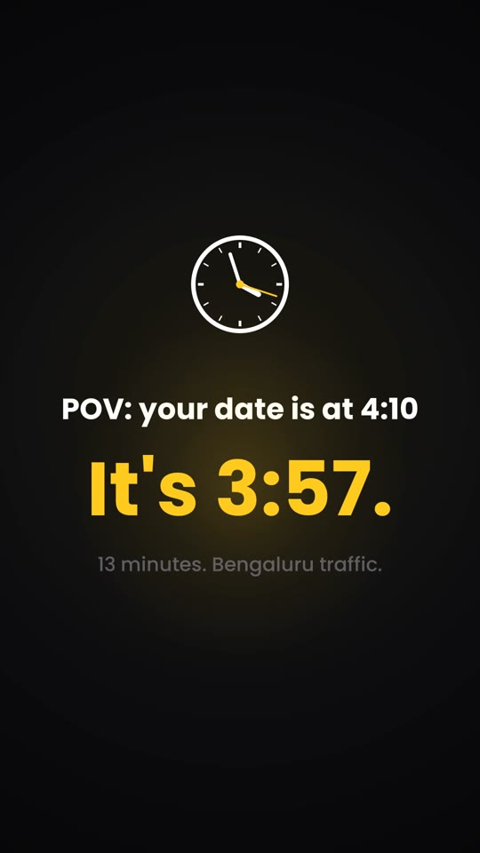
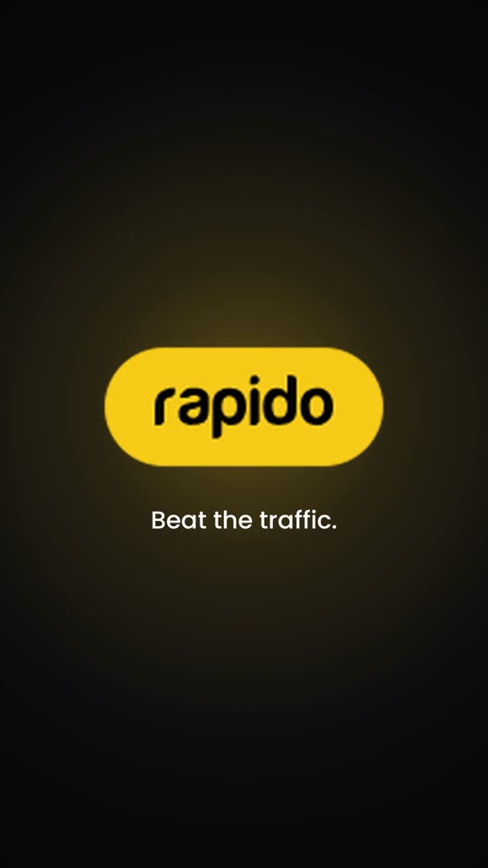
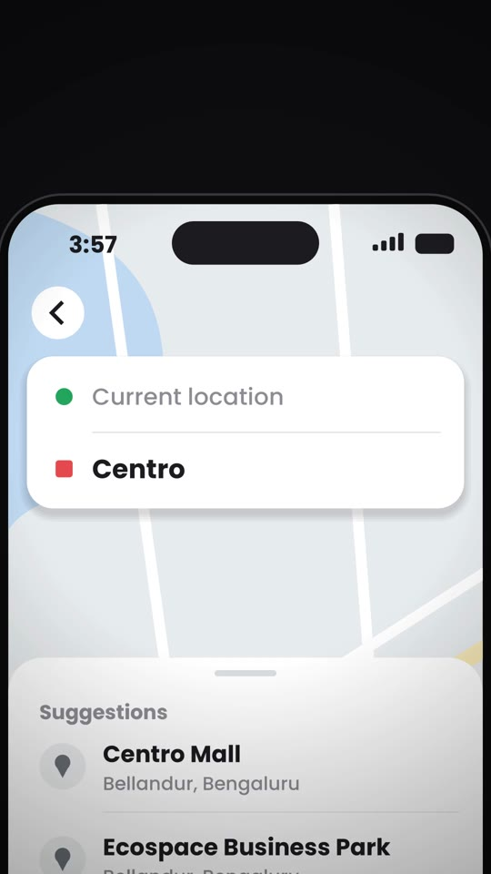
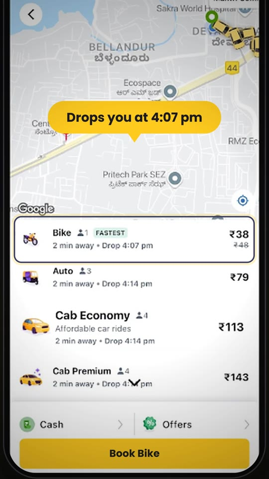
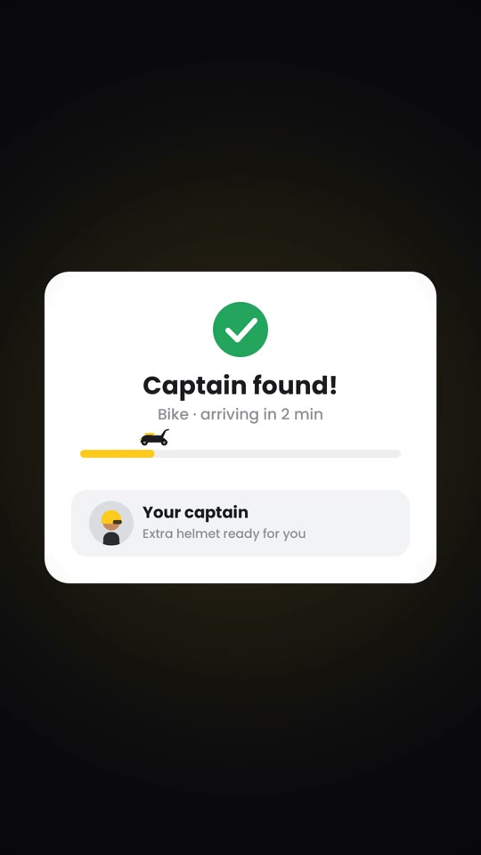
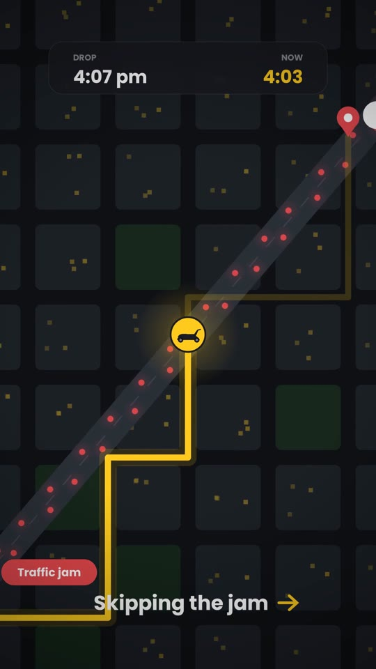
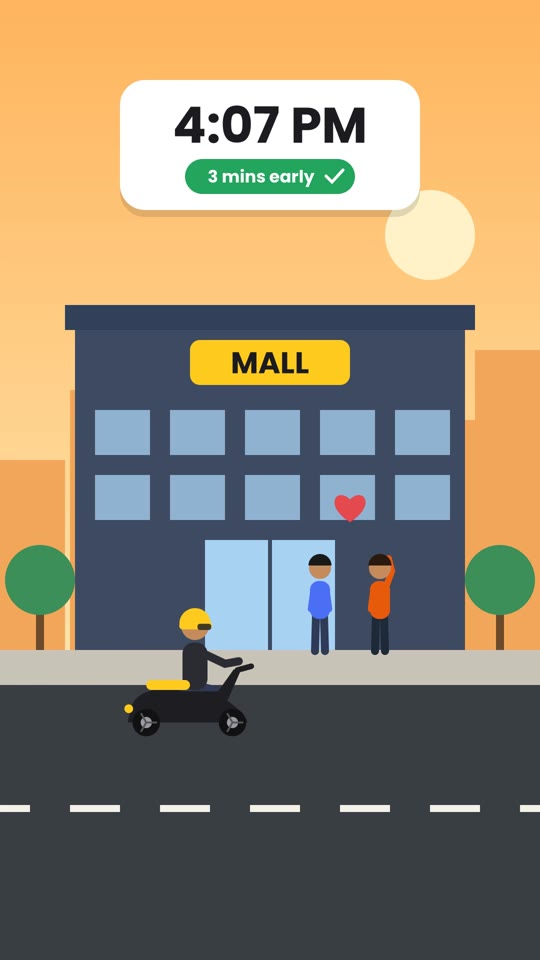
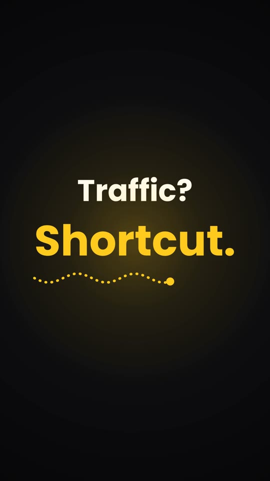

Make a 30-second app ad with one Claude chat
Screenshot in, finished ad out. Animation, music, sound effects and voiceover, all made inside Claude. No After Effects, no editing timeline, no voice app.
Works for any app: your own product, a client's, or one you just love using.

Hook 
Logo 
Search 
Real screen 
Captain 
Map ride 
Arrival 
Tagline
The ad we made with this exact workflow · concept ad, not affiliated with Rapido
Works for any app
- Food delivery
- Rides and travel
- Shopping
- Payments and banking
- Fitness and health
- Learning
- Your own startup
We used Rapido as the example. Swap in any app: the same six steps and prompts work. Just replace [APP] with its name and send its screenshots.
What you need
- 1 to 6 screenshots of the app (full resolution, straight from your phone)
- The brand logo as a PNG
- About 30 minutes, mostly waiting for renders
The workflow
- BriefLet Claude interview you
- StoryBuilt from your screenshot
- StoryboardApprove before rendering
- PreviewFrame grid, then fixes
- SoundMusic, SFX, voiceover
- ExportCheck and post
Step by step
Step 1: Let Claude interview you
Don't write a long brief. Tell Claude the app and the format, and ask it to ask you the questions. You answer in one line each.
Prompt 1 · Brief
I want to make a 30-second motion ad for [APP] in 9:16 for Instagram Reels. Before you build anything, ask me everything you need: assets, story angle, tagline, music mood and language.
When we did this, our answers were just: 9:16 · 30 seconds · viral tagline · chill music · English.
Not sure which app? Ask: “Suggest 5 apps that would make a great motion ad, with a story and a word-swap tagline for each.” We started with Spotify and switched to Rapido because the ride flow tells a better story.
Step 2: Let your screenshot write the story
Our screenshot showed the time as 3:57 pm and the bike drop as 4:07 pm. Claude turned that into the hook: “Your date is at 4:10. It's 3:57.” The real screen now proves the ad's promise.
Prompt 2 · Assets
[Attach screenshots + logo] Here are my assets. Read the details on the screenshots (times, prices, places, labels) and build the story around them so the real screen proves the point. Hide any personal info: names, phone numbers, faces, number plates.
Only have one screenshot? That's what we had. Claude used it as the hero scene and built simple mockups for the other screens. Send more real screens if you want it to look 100% authentic.
Step 3: Approve the storyboard first
Rendering takes a few minutes. Fixing the story on paper takes seconds. This is the plan we approved:
| Time | Scene | What happens |
|---|---|---|
| 0–2.6s | Hook | Ticking clock, “POV: your date is at 4:10” → “It's 3:57.” |
| 2.6–5s | Logo | Logo pops in with a yellow glow |
| 5–9s | Search | Phone rises, zoom on search, destination typed live |
| 9–13s | Real screen | Zoom on Bike, tap, “Drops you at 4:07 pm” callout |
| 13–16s | Captain | Check mark draws, progress bar fills |
| 16–21s | Map ride | Route weaves past a red traffic jam, clock runs |
| 21–24s | Arrival | 2D cartoon at the mall, “4:07 PM · 3 mins early” |
| 24–28s | Tagline | “Traffic? |
| 28–30s | End card | Logo + “Concept ad, not affiliated” |
Prompt 3 · Storyboard
Give me a scene-by-scene storyboard as a table with timestamps, plus 3 viral tagline options that use a word-swap twist (old word struck out, new word revealed). Don't render anything yet.
Step 4: Preview a frame grid, then fix in small rounds
Ask for still frames from every scene before the full video. You catch problems in one image instead of a 30-second render.
Prompt 4 · Preview
Build it, but first show me a frame grid with one frame from each scene. I'll approve before you render the full video.
What we fixed in our preview
- Two symbols (→ and ✓) didn't exist in the font and showed as boxes
- The captain's avatar spilled outside its card
- A leftover outline from editing the screenshot (Cab → Bike)
Give feedback with timestamps. “At 0:17, slow down the map” works far better than “make the map better”. Two or three changes per round.
Step 5: Music, sound effects and voiceover
Claude composes the music and sound effects with code, timed to the cuts. It can also write and generate the voiceover itself.
Prompt 5 · Sound
Add music and sound effects. - One continuous track, beat changes on the scene cuts - Realistic SFX only: typing, taps, a chime, whooshes on 2–3 big transitions - Piano on the opening and closing logo - Also give me music-only and SFX-only files
Prompt 6 · Voiceover
Add a voiceover. Write short English lines timed to each scene, generate the voice, and lower the music to about 40% while the voice plays. Show me the script with timestamps.
Our voiceover script
| Time | Line |
|---|---|
| 0:00 | “Date at four ten. It's three fifty-seven.” |
| 0:03 | “Relax. Open Rapido.” |
| 0:06 | “Type where you're headed, pick a bike, and you're there by four-oh-seven.” |
| 0:14 | “Your captain's two minutes away.” |
| 0:17 | “While cars sit in traffic, you zip right past it.” |
| 0:22 | “Four-oh-seven. Three minutes early.” |
| 0:24 | “Traffic? Not a problem. A shortcut.” |
| 0:28 | “Rapido. Beat the traffic.” |
Listen for brand names. AI voices can say them the American way. If it's off, ask Claude to respell it phonetically, switch voices, or send your own recording and ask Claude to sync it.
Step 6: Export and post
Export settings
- 1080×1920, H.264, 30 or 60 fps
- AAC 320 kbps stereo
- About −14 LUFS loudness
Before you post
- Every voice line lands on its scene
- No personal info visible
- Tested on phone speaker and headphones
- Labelled “Concept ad, not affiliated with [BRAND]”
One prompt to do it all
Once you've done it once, this single prompt covers the whole flow. Fill in the brackets.
Master prompt
[Attach app screenshots + logo] Make a [30]-second motion ad for [APP] in [9:16]. Story: build it around the real details in my screenshots. Hide any personal info. Hook: a POV line in the first 2 seconds. Tagline: word-swap twist, e.g. "[OLD WORD] → [NEW WORD]". Give me 3 options first. Sound: [chill / upbeat] music, minimal realistic SFX, English voiceover with music ducked under it. End card: logo + "Concept ad, not affiliated with [APP]". Process: storyboard table first → frame grid preview → full render. Deliver: final MP4 (1080×1920) + music-only, SFX-only and voice-only files.
Good to know
- Send full-resolution screenshots: Small or cropped screenshots go soft when Claude zooms in. Take them straight from your phone.
- Claude can't watch YouTube links: To copy a style, upload a screen recording of the reference ad instead of a link.
- Renders take a few minutes: That's why the storyboard and frame grid steps matter. Use them to avoid re-rendering.
- Your originals stay safe: Claude works on copies, so your screenshots and files are never changed.